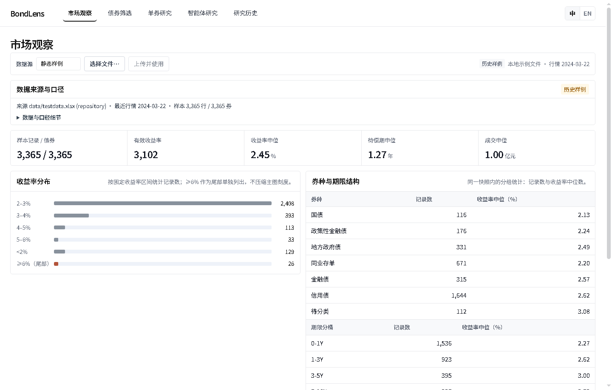
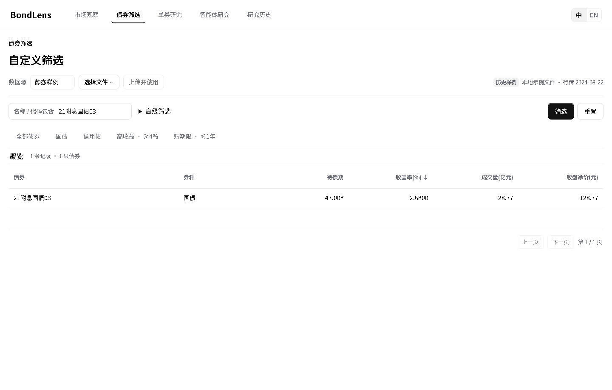
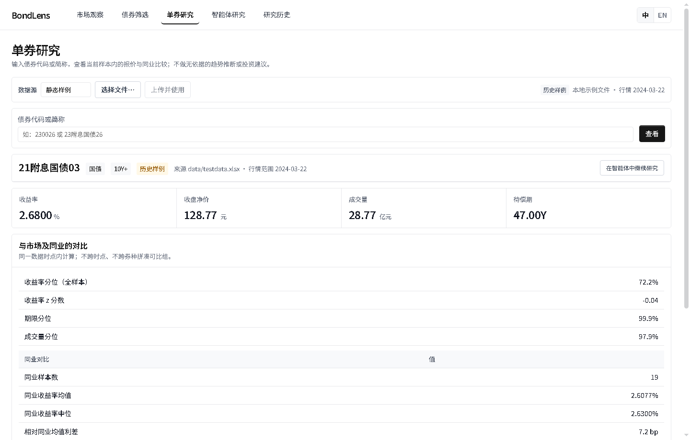
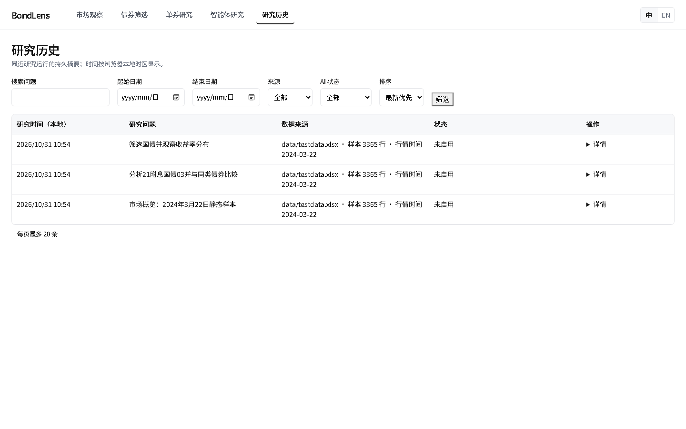

市场总览 /market
收益率分布、成交量与样本结构；来源条显示数据源、行情时点与行数，口径细节可展开。
专业研究工作台 · Chinese bond research workbench
本地、证据优先的债券研究工作台：从市场样本出发，完成债券筛选、 单券同业比较、确定性分析及历史证据回溯。支持静态样本与 CSV/Excel 导入； AI 解读须由用户显式触发。
数字由确定性工具计算，模型只做叙述且必须通过护栏；AI 解读默认关闭， 仅在结果页显式点击后才发起单次请求。所有页面中英双语。
基于 2024-03-22 静态历史样本（非实时）：目标收益率 2.68%， 与 19 条相同券种、相同期限桶的可比记录比较，同业平均收益率 2.6077%， 相对均值 +7.23 BP。数据缺少逐行行情日期，不能据此确认所有交易同日发生，也不构成投资建议。
以下截图全部来自上述 21附息国债03 静态研究案例；原始历史和付费模型均未参与。交互应用仍需本地启动。




收益率分布、成交量与样本结构；来源条显示数据源、行情时点与行数，口径细节可展开。
按简称、收益率、待偿期等条件过滤债券列表，也可上传 CSV/Excel 样本即时筛选。
单只债券的关键指标、同业对比与研究报告；AI 解读面板默认关闭，需显式点击。
既往研究运行的时间、问题、数据来源与结论摘要，技术评分折入详情；证据包可追溯。
一句话问题进入可审计的分析运行：规划 → 工具取证 → 报告；LLM 叙述仅在显式请求时按需生成。
不虚构行情、不提供投资建议；缺失字段明确标记，非投资建议声明贯穿全站。
当前完整研究案例和以前保存的其他演示分开列出；所有 HTML 都是静态报告，不是在线运行的研究服务。
Python 3.12 + Flask/Jinja + pandas；设置 BOND_DATA_MODE=static 后运行 python app.py，或使用 Docker Compose；健康检查 /healthz。
2026-10-31 本地 253 项 pytest 通过、1 项跳过；Agent 与红队评测、Docker 构建和健康检查均纳入 CI。